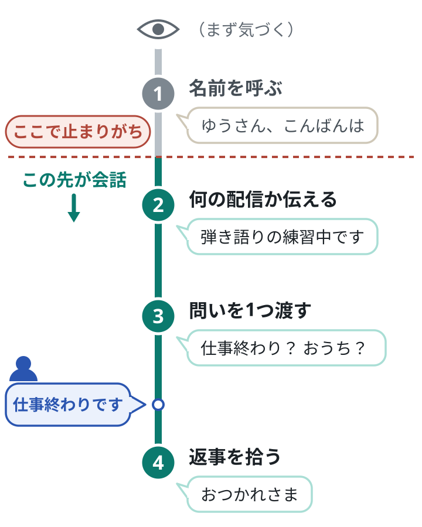
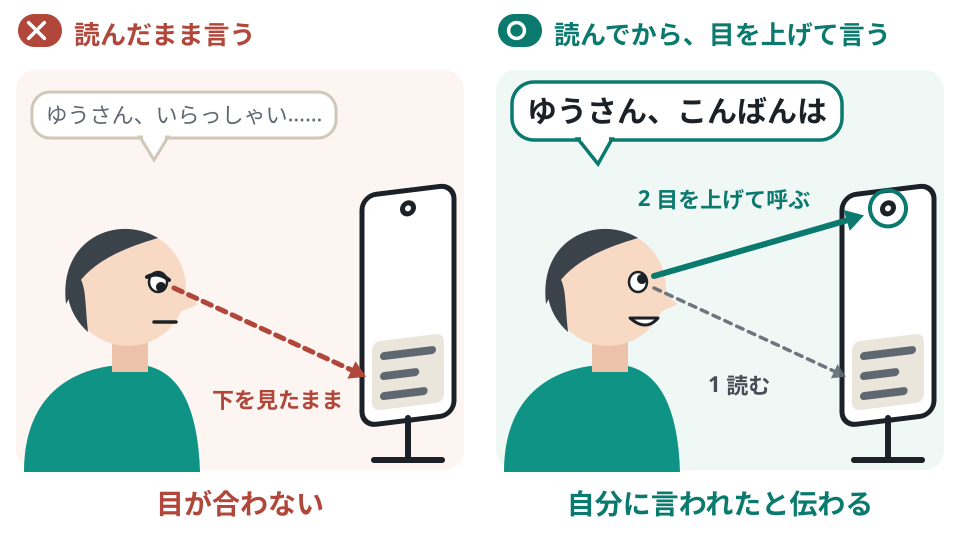

「初見さんいらっしゃい」の次に何を言う？｜会話が始まる声のかけ方
初めて来た人に、名前を呼んだあと何を言えばいいかが分かります。自己紹介と最初の問いを自分の言葉で用意し、返ってきた一言を会話に広げられるようになります。

この記事で学べること
- 歓迎を「名前 → 何の配信か → 答えやすい問い → 返事を拾う」までつなぐ型
- 何者で、何の配信かをひと息で伝える、固定の自己紹介の作り方
- 返事が来ないとき、話の途中で初めて来た人が入ってきたときの立て直し方
この記事を終えると
初めて来た人の名前を呼び、何の配信かを言い、二択の問いを 1 つ渡して、2 往復以上の会話にできる。
「いらっしゃい」で止めない
結論
歓迎は、名前を呼ぶ → 何の配信か伝える → 答えやすい問いを 1 つ渡す → 返事を拾う の 4 つをひと続きでやります。「いらっしゃい」は入口で、会話はその先にあります。
用語
初見（しょけん）と常連
初見は、その配信に初めて来た人のこと。あなたが誰で、何の配信なのかを、まだ何も知りません。何度も来てくれている人は常連と呼びます。
なぜ大事？
- 「いらっしゃい」と言われただけでは、初めて来た人は何を書けばいいのか分からないまま画面を見ています。
- コメント欄に一言書くのは、思っているより勇気が要ります。配信者の側から「これなら書ける」という問いを渡すと、最初の一言が出やすくなります。
- LIVE の良さは、画面越しにその場でやりとりが生まれること。最初の挨拶は、そのやりとりを始めるきっかけです。
歓迎だけで終わる
- （画面に「ゆうさんが入室しました」と出る）
- 配信者「あ、初見さんいらっしゃい。ゆっくりしていってね」
- 配信者（そのまま、さっきまでの話に戻る）
- ゆうさんは何も書かないまま、少しして出ていく
問いまで渡して、返事を拾う
- 配信者「ゆうさん、こんばんは。来てくれてありがとう」
- 配信者「いま、弾き語りの練習をしながら雑談してます。ゆうさんはお仕事終わり？ それともおうち？」
- ゆう「仕事終わりです」
- 配信者「おつかれさま。今日は長い一日だった？ 私は今日、昼ごはんを食べそこねました」
なぜ良い？
良い例は、名前で「あなたに気づいた」と伝え、何をしている配信かを一言で伝え、二択の問いで「書くこと」を渡しています。返ってきた一言にも、もう一歩返しています。やりがちな例は感じは良いのに、相手に何もすることが残りません。


コツ
まだ誰も来ていないときは
配信を始めてすぐは、誰もいない時間があります。黙って待たずに、いましていること・これからすることを声に出します（「いま 2 曲目の出だしを練習してます。ここがいつも走っちゃうんです」）。入ってきた人が最初に見るのは、その瞬間のあなたです。配信の前に、コメントが無くても 1 人で進められる最初のひとこま（練習、準備の様子、今日やることの紹介など）を 1 つ決めておくと、人数を気にせず始められます。公式の教材も、配信が始まってからの最初の 5 分間を大事な時間として紹介しています。
自分ならどうする？
あなたが知らない人の配信に入って、「いらっしゃい」とだけ言われたら、コメント欄に何を書きますか？
ヒントを見る
書く言葉がすぐ浮かばなかったら、それが初めて来た人の状態です。
答えの例を見る
「こんばんは」くらいしか書けない。問いをもらえれば、それに答える形で書ける。
名前のあとに、何の配信かを伝える
結論
名前を呼んだ直後に、自分が誰で、いま何をしている配信かを短く伝えます。自己紹介は毎回その場で考えず、核になる一文を決めておきます。
なぜ大事？
- 名前（ニックネーム）を呼ばれると、「自分に気づいてくれた」と感じます。公式の教材でも、この喜びがファンへの第一歩になると説明されています。
- 初めて来た人は、配信のどのタイミングで入ってくるか分かりません。途中から来た人には、冒頭で話したことは届いていません。
- 何をしている配信か分からないままだと、分かる前に出ていってしまいます。知りたいのは「誰？」「いま何してる？」「見ると何がある？」「自分はどう参加できる？」の 4 つです。
コツ
名前が読めないとき
記号や英数字で読み方が分からない名前は、飛ばさずに「お名前、なんて読めばいい？」と聞きます。これ自体が、相手にとっていちばん答えやすい問いになります。読める部分だけで呼んで「合ってる？」と確かめるのも自然です。
やり方
固定の自己紹介は、次の順で 1 回だけ作ります。毎回変えない核の 1 文（手順 1）は、ひと息で言える長さにします。
名前に、ひとこと添える
「はるです」だけでなく、配信の雰囲気が伝わる短い言葉を添えます（置く場所は、名前の前でも後でもかまいません）。公式の教材も、名前に、世界観が伝わる短いキャッチコピーを添えることを勧めています。この一言が、「誰？」と「見ると何がある？」の答えになります。
いま何をしているかを足す
この部分だけは毎回入れ替えます。「今日は新しい曲の練習中です」「いまメイクしながら雑談してます」のように、目の前でやっていることをそのまま言います。「いま何してる？」の答えです。
参加のしかたを一言で渡す
「聴いてるだけでも大丈夫です」「好きな曲があったら教えてね」のように、どう居てくれてもいいことと、書くなら何を書けばいいかを添えます。「どう参加できる？」の答えです。
声に出して削る
言いにくい言葉、息が続かない所を削ります。紙の上で良い文より、口から自然に出る文を残します。
固定の自己紹介の例（架空の配信者）
落ち着いた雑談と弾き語り
「夜のひと息におじゃまします、弾き語りのはるです」
ここまでが核。続けて今日の部分を足す:「今日は新しい曲を練習しながら、ゆるく話してます。聴いてるだけでも大丈夫です」。静かな声の人向け。無理に元気にしない。
元気な雑談
「今日の疲れをおしゃべりで飛ばす、雑談担当のなつです」
今日の部分:「いまは今日あった小さい事件を順番に話してます。みんなの事件も聞かせてね」。テンポが速い人向け。
舞台に立つ人
「あきです。舞台のせりふの裏側を、一緒にのぞく時間にしています」
ひとことを名前の後に置いた形。今日の部分:「今日は次の役のせりふの言い方で迷っています。強めと抑えめ、どっちが好きか教えてください」。本業の話を、見ている人が参加できる形にしている。
BEFORE
毎回その場で考える
- 「えっと、初見さんこんばんは。えー、私は……普段は雑談とか、あと歌とか、いろいろやってて……」
- 人が入るたびに説明が変わり、長くなる
- 考えている間、目線が下に落ちて声が小さくなる
AFTER
核を決めておき、今日の部分だけ入れ替える
- 「ゆうさん、こんばんは。夜のひと息におじゃまします、弾き語りのはるです。今日は新しい曲の練習中です」
- 何度言っても同じ長さで、同じ言葉
- 考えなくていいので、相手の名前とコメントに目が向く
核を毎回同じ言葉にするのは、1 本目の講座の「目印」と同じ考え方です。
コツ
自己紹介を言い直すタイミング
途中から来た人には、冒頭の自己紹介は届いていません。人が続けて入ってきたときと話題を変えるときに、同じ自己紹介をもう一度言います。
問いは、すぐ答えられるものを 1 つ
結論
最初の問いは、「はい／いいえ」か二択で答えられるものを 1 つ。答えが返ってくるまで、次の問いを重ねません。
なぜ大事？
- 公式の教材は、挨拶のあとに「今日のご飯は何食べた？」「今週もお疲れ様」のような日常の軽い話題を優しく振ることを勧めています。この記事では、それをさらに答えやすくするために、二択の形に狭めます（「もう食べた？ まだ？」）。
- 初めての場所では、文章を考えて打つこと自体が負担です。選ぶだけ、一言で済む問いなら、打つ手間が小さくなります。
- 問いを続けて投げると、どれに答えればいいか分からなくなり、取り調べのように感じられます。
| 答えにくい問い | 答えやすい問い | なぜ答えやすいか |
|---|---|---|
| 「どこから来たの？」 | 「いまおうち？ それとも外？」 | 住んでいる所を言わずに済む |
| 「趣味はなに？」 | 「音楽は聴くほう？ あんまり聴かない？」 | 選ぶだけでいい |
| 「何か聞きたいことある？」 | 「この曲、知ってる？」 | 「知ってる」「知らない」の一言で済む |
| 「今日どうだった？」 | 「今日は疲れた日？ 元気な日？」 | 長い説明をしなくていい |
| 「どうやってこの配信を見つけたの？」 | 「おすすめに出てきた感じ？」 | 「はい」で済む |
質問を重ねてしまう
- 配信者「みかんさん、こんばんは。初見さんだよね？ どこから来たの？ 何歳くらい？ お仕事は何してるの？ TikTok はよく見る？」
- みかん「（どれに答えれば……）」
- 配信者「あれ、みかんさん？ いるー？」
1 つ投げて、待って、拾う
- 配信者「みかんさん、こんばんは。弾き語りのはるです。みかんさんは、音楽は聴くほう？」
- 配信者（コメント欄を見ながら、弦を軽く鳴らして待つ）
- みかん「聴きます」
- 配信者「うれしい。最近よく聴いてるのは、元気な曲？ 落ち着く曲？」
なぜ良い？
良い例は問いが 1 つで、答えは一言で済みます。待つ間も、手を動かして場をつないでいます。返事が来てから次の問いを出しているので、やりとりが会話の形になります。やりがちな例は親しみのつもりでも、相手には答える負担と、個人のことを聞かれる怖さが重なります。
問いを投げたのに、返事が来ないとき
ゆうさんが入室。声をかけたが、コメント欄は動かない。
- はる
ゆうさん、こんばんは。弾き語りのはるです。いま、次に歌う曲を迷ってて。明るい曲と、しっとりした曲、どっちが聴きたい気分？
コメントは来ない。はるは同じ問いを繰り返さず、ひと呼吸おいて、自分で答える。
- はる
私はね、今日はしっとりの気分。なので、しっとりからいきます。聴いてるだけでも大丈夫だよ。途中で「明るいのがいい」ってなったら、いつでも言ってね。
1 曲歌い終わったころ、コメントが 1 つ届く。
ゆういい声ですね
- はる
ゆうさん、ありがとう。聴いててくれたんだ、うれしい。次は明るいのにする？ このまましっとり？
ポイント
返事が無くても、自分の答えを先に言って進めます。見ているだけでいいと伝えておくと、相手は自分の間合いで書けます。この例では後からコメントが届きましたが、届かないまま終わることもふつうにあります。それでも、同じ進め方でかまいません。
注意
やらないこと
年齢・住んでいる場所・仕事の中身など、個人が分かることを最初に聞くこと。「ゆうさん、何か言ってよ」と名指しで求めること。「誰もコメントしてくれない」「さみしい」と口に出すこと。あとの 2 つは、相手に申し訳なさを感じさせて書かせる形になり、あとから入ってきた人が最初に聞く言葉にもなります。名前を呼ぶのは最初の 1 回。返事が無ければ、そのあとは全体に向けて話します。
自分ならどうする？
あなたの配信でいつも使える「二択の問い」を 1 つ作るなら？
ヒントを見る
いま配信でやっていることに結びつけると、答えがそのまま次の話題になります。
答えの例を見る
メイクしながらの配信なら「今日のリップ、赤とピンクどっちがいい？」。雑談なら「今日はもうお風呂入った？ これから？」。
返事を拾って、会話にする
結論
コメントに「ありがとう」と答えて終わりにせず、受ける → 自分の話を少し足す → 問いで返す と 3 歩進めます。一問一答で終わらなければ、1 つのコメントが会話になります。
一問一答で終わる
- ゆう「いい声ですね」
- 配信者「そうかな、ありがとう」
- （沈黙。配信者は次のコメントを待つ）
受けて、足して、返す
- ゆう「いい声ですね」
- 配信者「ゆうさん、ありがとう。うれしい。実は今日、声が出にくくて、始まる前にしばらく発声してたの」
- 配信者「ゆうさんは、歌うのは好き？ 聴く専門？」
なぜ良い？
やりがちな例は返事として正しいのに、ゆうさんに次に書くことが残りません。良い例は、裏側を一つ見せて人柄を伝え、次の一言を書きやすい問いで返しています。コメントを待つのでなく、自分から次の一手を出しています。
やり方
上の良い例を、3 つに分けるとこうなります。
受ける
名前を付けて、まず受け取ります。言葉が出てこないときは、相手の言葉をそのまま繰り返すだけで 1 歩目になります（「寝る前なんだ」「電車の中なんだね」）。繰り返している間に、次の言葉を考える時間ができます。
自分の話を少し足す
今日の準備、裏側、小さな失敗など、一言で十分です。裏側を一つ見せると、人柄が伝わります。
問いで返す
二択で、まず本人に返します。見ている人が 1 人か 2 人のうちは、これで十分です。ほかにも人がいるときは、「みんなは歌う派？ 聴いてる派？」と全員に広げます。
一言のコメントが、みんなの会話になるまで
初めて来たみかんさんが、問いに一言だけ返してくれた直後。常連のこたろうさんも見ている。
みかん落ち着く曲が好きです
- はる
みかんさん、落ち着く曲派なんだ。私も夜はそっち。寝る前に明るい曲を聴くと目が冴えちゃって。みかんさんは、聴くのは寝る前？ 移動中？
みかん寝る前です。聴きながら寝ちゃう
- はる
聴きながら寝ちゃうの、いちばんぜいたくだね。みんなはどう？ 寝る前に音楽、聴く派？ 無音派？
こたろう無音派。でもはるさんの配信はつけっぱなしで寝る
- はる
こたろうさん、それは子守歌あつかいだね。じゃあ今日は、みかんさんとこたろうさんが寝られそうな 1 曲、いきます。
ポイント
はるの 2 行目に、受ける・自分の話・問いで返すの 3 歩が入っています。ほかにも人がいたので、次は「みんなはどう？」と広げ、最後は次にやることにつながりました。会話を回すのは配信者の側です。
注意
自分が聞かれて答えないことを、先に決めておく
会話が始まると、あなたも聞かれます。住んでいる場所・最寄りの駅・勤め先や学校・本名など、答えないことを配信の前に決めておきます。その場で迷うと、つい答えてしまうからです。聞かれたら、声の調子を変えずに「ゆうさん、そこは内緒にしてるんです。そのかわり、好きな食べ物なら何でも答えますよ。ゆうさんは甘いもの派？ しょっぱいもの派？」と、別の話題を渡します。謝ったり理由を長く説明したりせず、名前を呼んで問いで返せば、断っても冷たくならず、会話は続きます。
自分ならどうする？
「いい声ですね」と書かれました。「ありがとう」のあとに足す、あなた自身の話を一言で書くと？
ヒントを見る
今日の配信の裏側、準備、失敗など、小さなことで十分です。
答えの例を見る
「ありがとう。実は今日、始まる前に 3 回くらい歌い直してたの」
話の途中で初見さんが来たら
結論
いまの話を切らずに、一言で区切る → 名前を呼ぶ → いま何の話かを説明する → 同じ話題の問いを渡す。初めて来た人を、話の途中から入れるようにします。
なぜ大事？
- 常連と話し続けていると、初めて来た人は途中から入れません。内輪の話が長く続くことは、出ていく理由になります。
- 反対に、初めて来た人だけを特別扱いすると、いま話していた常連が置いていかれたと感じます。
- どちらも立てる方法は、いまの話題に、初めて来た人を招き入れることです。
常連と話している途中で、初めて来た人が入ってきた
常連のこたろうさんと、昨日の配信で起きた失敗の話で盛り上がっている（こたろう「昨日のあれ、まだ思い出して笑ってる」）。そこへ、ゆうさんが入室。
画面に、ゆうさんの入室が表示される。はるはコメント欄で名前を読んでから、目を上げてレンズを見る。
- はる
こたろうさん、ちょっとだけ待っててね。ゆうさん、こんばんは。弾き語りのはるです。
- はる
初めての人に説明すると、昨日の配信で私が歌詞を全部飛ばして、鼻歌で 1 曲歌いきったんです。こたろうさんがその証人です。
こたろう証人です。あれは名演でした
- はる
ゆうさんは、カラオケで歌詞が飛んだら、止まる派？ ごまかして歌いきる派？
ゆうごまかします
- はる
仲間だ。こたろうさん、ごまかす派が 1 人増えました。
ポイント
「昨日のあれ」を、「初めての人に説明すると」の一言で、誰にでも分かる話に言い直しています。常連との思い出は配信の温かさなので、消す必要はありません。こたろうさんには「待っててね」と声をかけ、証人として話の中に残しました。問いは、いまの話題と同じものです。
コツ
何人も続けて入ってきたら
全員に同じ長い挨拶をすると、そのたびに話が止まります。名前と一言だけにして、問いはみんなに 1 つ投げます。4 つを毎回きっちりやる必要はありません。
自分ならどうする？
あなたの配信で、常連の人とだけ通じる話を 1 つ思い出してください。それを、初めて来た人に一文で説明すると？
ヒントを見る
「初めての人に説明すると」で言い始めると作りやすくなります。まだ常連がいない人は、家族や友人とだけ通じる話で試してください。
答えの例を見る
初めての人に説明すると、先週の配信で私が歌詞を全部忘れて、鼻歌で歌いきったんです。
声に出して練習する
結論
型は、声に出して練習した分だけ本番で出ます。配信の前に、固定の自己紹介と問いを、名前を入れ替えながら声に出しておきます。まずは、初めて来た 1 人と 2 往復の会話ができることを目指します。
場面
手本を 1 回、通しで見る
平日の夜。はるは弾き語りの練習をしながら配信中。見ているのは、常連のこたろうさんだけ。
- 入室の直後
画面に、そらさんの入室が出る。はるは歌の区切りまで弾ききり、コメント欄で名前を読む。
- 名前と、何の配信か
目を上げてレンズを見て、ゆっくり「そらさん、こんばんは。夜のひと息におじゃまします、弾き語りのはるです。今日は新しい曲の練習中です。聴いてるだけでも大丈夫だよ」。
- 問いを 1 つ
「そらさんは、今日は疲れた日？ 元気な日？」。弦を軽く鳴らしながら、コメント欄を見て待つ。
- 返事を拾う
そら「疲れた日です」。はる「疲れた日なんだ、おつかれさま。私も今日はばたばたで、さっきやっと座れたところ。そらさんは、静かな曲とにぎやかな曲、どっちが聴きたい？」。そら「静かなの」。はる「こたろうさんも、今日は静かなのでいい？ じゃあ、静かな曲から 1 曲いきます」。
歌の途中で無理に止めず、区切りで声をかけています。名前、何の配信か、問い、返事を拾う、の 4 つが順に進み、常連のこたろうさんにも一言返して、次の 1 曲につながりました。
やり方
配信の前の、短い時間でできます。
一文を声に出す
下の道具で作った台本を、紙を見ないで言えるまで繰り返します。言いにくい所は、言いやすい言葉に変えてかまいません。
名前を入れ替えて言う
「ゆうさん」「みかんさん」「こたろうさん」と、名前だけ変えて 3 回。名前の所で詰まらなくなれば、本番でも止まりません。
読んでから、目を上げて言う
コメント欄を見て名前を読む。そのあと目を上げ、カメラのレンズを見て名前を呼ぶ。この「下を見る → 上げて言う」の順を、体で覚えます。1 本目の講座で決めたように、レンズが目の高さにあると、目が合いやすくなります。
録画して 1 回だけ見る
スマホの内カメラで録り、目線がレンズに来ているか、早口になっていないかだけ確かめます。


| 見る所 | 伝わりにくい言い方 | 伝わる言い方 |
|---|---|---|
| 目線 | コメント欄を見たまま名前を読む | 読んでから目を上げ、レンズを見て呼ぶ |
| 速さ | 早口で名前を流す | 名前の所だけ、少しゆっくり |
| 声 | 独り言の大きさ・低さのまま | 名前の頭だけ、ほんの少し明るく |
| 間 | 問いのあと、すぐ次を話す | 問いのあと、ひと呼吸待つ |
| 向き | 「みなさん」と全体に言う | レンズの向こうの 1 人に言う |
声を作る必要はありません。ふだんの自分の声のまま、名前の所だけ少し丁寧にします。静かな話し方が持ち味の人は、明るさを足すより、ゆっくり言うほうが合います。
初心者からプロへ
まずはここまで
名前を呼ぶ、何の配信か伝える、答えやすい問いを 1 つ渡す、返事を拾う。この 4 つを、来てくれた 1 人に対してできれば十分です。
慣れてきたら、一段上へ
受けたあとに「どの辺でそう思ってくれた？」と、相手の感じたことをもう一歩聞けるようになります。同じ「名前を呼ぶ」でも、初めて来た人には「気づいてもらえた」、常連には「覚えてもらえている」と、届く意味が違います。人が増えてもテンポを落とさないよう、どのコメントを拾ってみんなの話題にするかを選ぶ所を見ます。
今日覚える 3 つ
歓迎は「名前 → 何の配信か → 答えやすい問い → 返事を拾う」までで 1 セット。
問いは二択か「はい／いいえ」を 1 つだけ。返事が無ければ、自分の答えを先に言って進む。
常連との話は切らずに、「初めての人に説明すると」で開いて招き入れる。
ACTION PLAN
次にやること
下の台本の【 】を埋めて、固定の自己紹介（名前に添える一言・いま何をしているか・参加のしかた）を 1 つ書く。続けて、自分の配信で使う二択の問いを 3 つ書く。
相手の名前を「ゆうさん」「みかんさん」「こたろうさん」に入れ替えて、レンズを見ながら台本の①〜③を 3 回声に出す。
次の配信で、入ってきた人のうち最初の 1〜3 人に「名前 → 何の配信か → 問い 1 つ」を言う。配信が終わったらすぐ、下の「配信のあとに確かめる 5 つ」に丸を付ける。誰も来なかった日は、いましていることを声に出し続けられたかをメモする。
3 本の講座の行動をひととおり終えたら、その次の配信を、画面・光と見た目・声かけの 3 つで確かめる。下の「3 本をやり終えた次の配信メモ」に書き、直すのはいちばん気になった 1 つだけにする。
TOOLS
使える道具
テンプレート
入ってきた人への最初のひと声 台本（穴埋め）
【 】の中を自分の言葉で埋め、言いやすい言葉に直してから声に出します。①〜③は続けて言い、④は返事が来てから言います。毎回入れ替えるのは、相手の名前と「今日やっていること」だけです。
コメント欄で名前を読んでから、目を上げて言う。
例: 「夜のひと息におじゃまします、弾き語りのはるです。今日は新しい曲の練習中です」。一言は名前の後に置いてもよい。
問いは 1 つだけ。言ったら、ひと呼吸待つ。
受ける → 自分の話を足す → 問いで返す。ほかにも人がいれば「みんなは？」に替える。
同じ問いを繰り返さない。名指しで催促しない。
問いは、いまの話題と同じものにする。
書いた内容は、このブラウザの中だけに保存されます
ワークシート
わたしの二択の問い 3 つ
自分の配信でやっていることに合う問いを 3 つ書きます。例は自分の言い方に直してください。年齢・住んでいる場所・仕事の中身・恋人の有無など、個人が分かることは聞きません。
例: 「いまおうち？ それとも外？」「お仕事終わり？ これから？」「ごはんはもう食べた？ まだ？」
例: 「今日は疲れた日？ 元気な日？」「朝型？ 夜型？」「甘いもの派？ しょっぱいもの派？」
例（歌）: 「明るい曲としっとりした曲、どっちが聴きたい？」 例（メイク・服）: 「今日は赤とピンク、どっちがいい？」 例（雑談）: 「この話、続き聞きたい？ 次の話にいく？」
書いた内容は、このブラウザの中だけに保存されます
チェックリスト
配信のあとに確かめる 5 つ
配信が終わったらすぐ、覚えているうちに丸を付けます。配信を見返す方法は設定や時期で変わるので、確実に残したいときは、別の端末で自分の配信を開いて画面収録するか、家族や友人に見てもらいます。丸が付かなかった 1 つを、次の配信の課題にします。
できたらチェック
書いた内容は、このブラウザの中だけに保存されます
ワークシート
3 本をやり終えた次の配信メモ
3 本の講座の行動をひととおり終えたら、その次の配信のあとに書きます。それぞれ「できた／まだ」と、気づいたことを一言。直すのは 1 つだけに絞ります。
背景・手前・カメラの高さが、決めたとおりだったか（1 本目の講座）
顔が暗くなっていなかったか。表情が見えたか（2 本目の講座）
上の「配信のあとに確かめる 5 つ」で、丸が付いた数（この講座）
いちばん気になった 1 つだけ書く
書いた内容は、このブラウザの中だけに保存されます